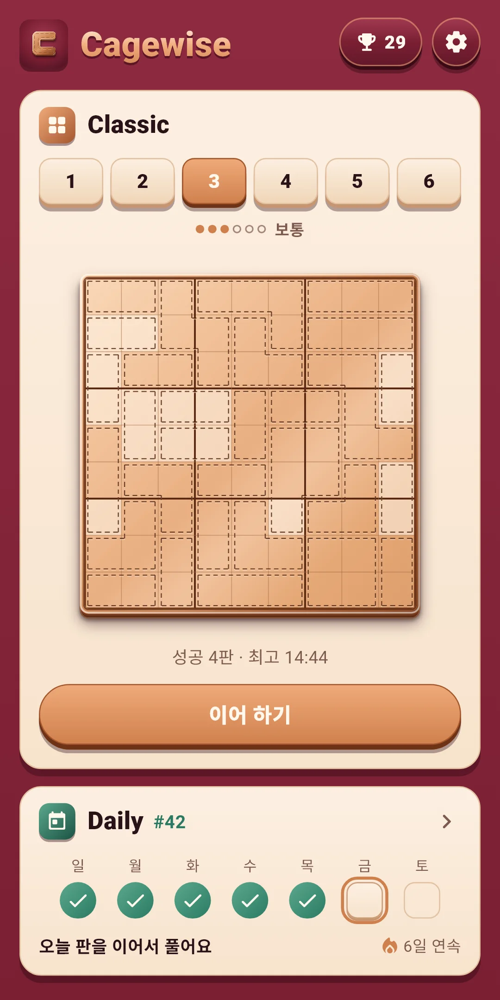
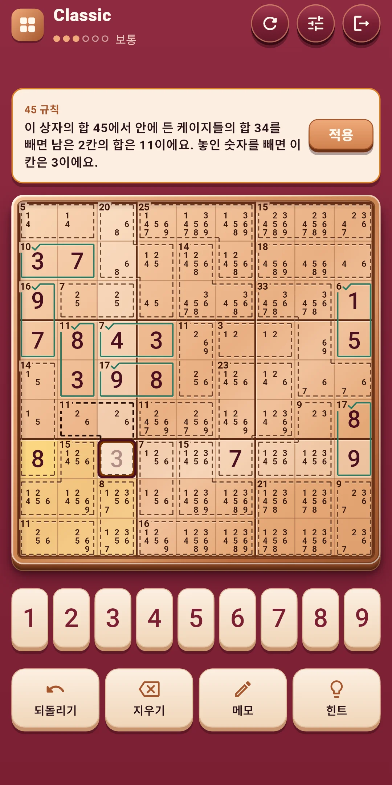
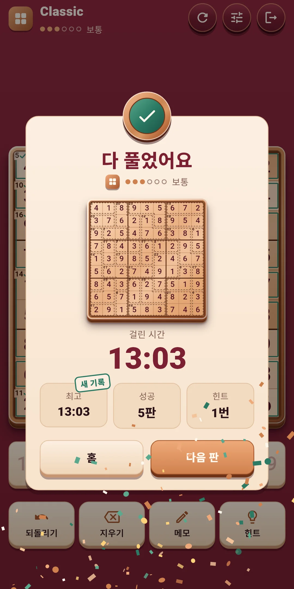
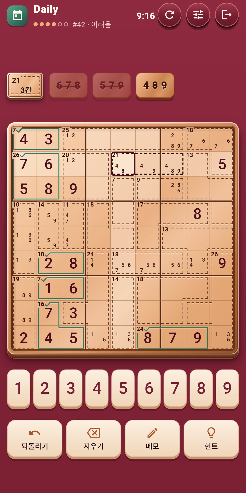
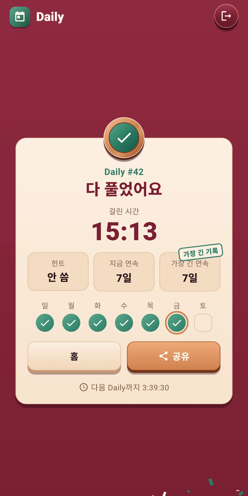
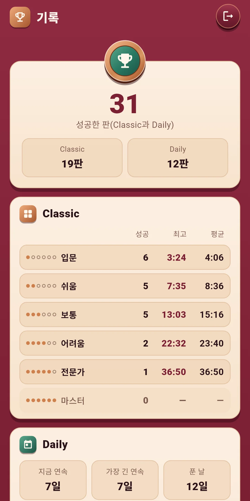
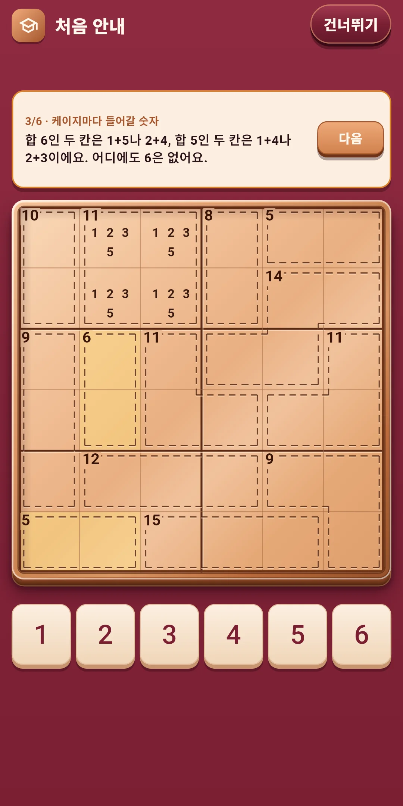

Cagewise
사용 설명서
사용 설명서







| 앱 이름 | Cagewise |
|---|---|
| 버전 | 1.0.1 |
| 개발 | Willee Project |
| 지원 플랫폼 | Android |
9×9 판에 1~9를 채우는 스도쿠에 케이지(점선으로 묶은 칸 무리와 그 합)를 더한 논리 퍼즐, 킬러 스도쿠입니다. 케이지의 합을 실마리 삼아 차근차근 따져 나가면 풀립니다.
처음 안내가 6×6 판으로 보여 주는 세 가지입니다. 힌트의 이름표에는 케이지 조합, 숨은 싱글, 45 규칙으로 나옵니다.
더 어려운 요령은 힌트가 이유와 함께 알려 줍니다(4장).
아래쪽 단추 줄:
| 단추 | 하는 일 |
|---|---|
| 되돌리기 | 마지막으로 한 일을 하나씩 되돌립니다. 횟수 제한이 없습니다 |
| 지우기 | 고른 칸의 숫자나 메모를 지웁니다 |
| 메모 | 메모 쓰기를 켜고 끕니다 |
| 힌트 | 다음에 할 일을 이유와 함께 알려 줍니다. 횟수 제한이 없습니다(4장) |
위쪽 줄 오른쪽의 다시 하기(↻) 단추:
| 고를 것 | 내용 |
|---|---|
| 이 판 처음부터 | 놓은 숫자와 메모를 모두 지워 처음으로 돌립니다. Classic은 걸린 시간과 힌트도 처음부터 세고, Daily는 그날 쓴 시간과 힌트를 이어서 셉니다. 아직 숫자도 메모도 없으면 흐리게 꺼져 있습니다 |
| 새 판 (Classic만) | 이 판은 그만두고 같은 등급의 다른 판을 풉니다. 그만둔 판은 성공으로 세지 않습니다 |
그 옆의 빠른 설정 단추는 효과음·진동·효과와 판 설정(5장)을 게임 화면에서 바로 바꾸는 창을 엽니다. 창 위쪽을 누르거나 끌어 내리면 닫힙니다. 맨 오른쪽 끝은 나가기(문 모양)이고, 나가도 푸는 판은 저절로 저장됩니다.
힌트 단추가 다음에 할 일을 두 단계로 알려 줍니다. 힌트는 횟수 제한 없이 무료입니다.
설정의 판과 입력과 도움 기능에서 켜고 끕니다. 게임 중에는 빠른 설정에서 바로 바꿀 수 있습니다.
Cagewise Daily #12 ✅ 18:41 힌트 1번 🔥 5일 연속
#12는 Daily 번호이고, 그 옆은 걸린 시간(분:초)입니다. 둘째 줄은 쓴 힌트 수(없으면 '힌트 없이'), 셋째 줄은 연속 기록입니다(이틀 이상일 때만). 첫 줄은 어느 언어에서나 같습니다. 번호는 출시 첫날이 #1이고 하루에 하나씩 늘어나, 번호가 같으면 같은 판입니다.
홈 오른쪽 위의 트로피 단추로 엽니다. 단추에는 성공한 판 수가 보입니다.
홈 오른쪽 위 톱니바퀴로 엽니다. 묶음은 넷입니다. 게임 중에는 빠른 설정 단추로 앞의 세 묶음을 바로 바꿀 수 있습니다.
| 항목 | 내용 |
|---|---|
| 효과음 | 숫자를 놓고 지울 때, 케이지·줄·상자를 완성할 때, 판을 풀었을 때 등의 소리를 켜고 끕니다. 줄·상자를 연달아 완성하면 소리가 한 음씩 높아집니다 |
| 진동 | 숫자를 놓거나 지울 때는 가볍게, 케이지나 줄·상자를 완성하면 더 세게, 판을 풀면 길게 떨립니다. 켜고 끕니다 |
| 효과 줄이기 | 모든 효과를 한 번에 줄입니다. 켜 두는 동안 아래 효과 칸은 꺼진 모습으로 흐려집니다. 기기의 애니메이션 끄기 설정도 따릅니다 |
| 움직임 효과 · 빛 효과 · 색종이 | 세 칸을 이은 띠에서 효과마다 켜고 끕니다. 켠 칸에는 체크가 보이고, 칸을 길게 누르면 설명이 보입니다. 움직임 효과는 놓은 숫자와 완성한 케이지, 빛 효과는 줄·상자 완성과 판 완성, 색종이는 판을 다 풀었을 때입니다. 판 전체가 흔들리는 효과는 없습니다 |
| 항목 | 내용 |
|---|---|
| 큰 숫자 | 판의 숫자를 크게 그립니다. 처음에는 꺼져 있습니다 |
| 숫자 먼저 입력 | 숫자를 먼저 고른 뒤 칸을 눌러 놓습니다. 처음에는 꺼져 있고, 칸을 먼저 누르는 방식이 기본입니다 |
| 메모 자동 정리 | 숫자를 놓으면 줄·상자·케이지 메모에서 지웁니다. 처음에는 켜져 있습니다 |
| 같은 숫자 강조 | 고른 숫자를 판에서 밝힙니다. 처음에는 켜져 있습니다 |
| 항목 | 내용 |
|---|---|
| 규칙 충돌 표시 | 중복된 숫자와 합을 넘은 케이지를 표시합니다. 처음에는 켜져 있습니다 |
| 케이지 조합 도우미 | 고른 케이지에 들어갈 숫자 조합을 보여 줍니다. 처음에는 켜져 있습니다 |
| 실수 바로 보기 | 답과 다른 숫자를 바로 표시합니다. 처음에는 꺼져 있습니다 |
| 항목 | 내용 |
|---|---|
| 언어 | 기기 언어를 따르거나(처음 값) 목록에서 직접 고릅니다 |
| 개인정보 보호 옵션 | 광고 동의를 다시 엽니다. 동의가 필요한 지역(유럽 등)에서만 보입니다 |
| 규칙 보기 | 처음 안내를 다시 봅니다 |
| 앱 정보 | 버전, 이 설명서(게임 방법), 개인정보처리방침, 오픈소스 라이선스 |